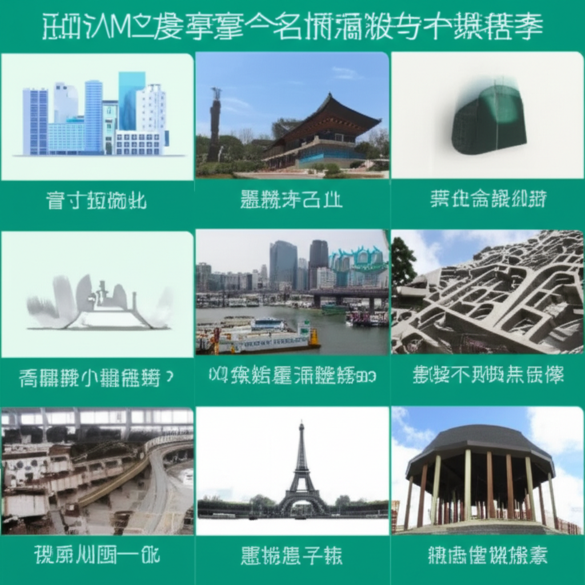

# 最新全球及本地新聞綜覽：健康、時事與生活資訊
## 引言
今日新聞焦點涵蓋全球時事、本地健康資訊以及生活相關的各個面向。從國際媒體的大紀元、新唐人亞太電視台，到本地的澎湖即時新聞網，資訊來源廣泛。特別值得關注的是健康議題，包括高血壓的預防與治療，以及台大與北醫大合作的肝癌治療新方向研究。此外，新住民全球新聞網則提供多語種資訊，幫助新住民了解國內外時事。本篇文章將對這些新聞重點進行整理與分析，提供讀者更全面的資訊掌握。
## 主體內容
### 第一點：健康與醫療新知
近期多篇新聞都集中在健康領域。自由健康網報導了台大醫院與北醫大合作，針對肝癌治療尋找新方向。吳明賢院長強調亞洲應發展更符合本土需求的藥物，不應一味依賴歐美。與此同時，星島日報（加拿大）則關注全球高血壓問題，指出每3人就有1人患有高血壓，並介紹了10大血壓異常種類以及適合的運動。vocus上的文章則探討了血壓忽高忽低的情況，以及是否需要立刻用藥的問題，提醒讀者高血壓控制不佳可能引起的疾病。這些新聞突顯了健康議題在全球範圍內的重要性，以及預防和治療的重要性。
### 第二點：多元資訊平台與本地新聞
除了健康議題，資訊平台的多樣性也值得關注。新住民全球新聞網提供多語種的時事資訊，幫助新住民更容易地了解國內外的重要新聞及生活訊息。另一方面，澎湖即時新聞網則專注於澎湖縣的地方新聞、體育、教育等資訊，提供本地居民一個交流平台。這些平台的存在，反映了資訊傳播的多元化和社群的重要性。
### 第三點：國際新聞與其他資訊
雖然摘要中直接呈現的國際新聞較少，但大紀元和新唐人亞太電視台皆提供24小時全球新聞滾動，涵蓋政治、經濟、社會等各個方面。值得注意的是，大紀元提及的星巴克標誌建築，採用計算機控制的機械臂完成大部分工作，反映了科技在建築領域的應用。而阿波羅醫院則介紹了HSG測試或子宮輸卵管造影，提供相關醫療資訊。Professorlin.com 則關注科學養生保健，避免謠傳。
## 結論
總體而言，今日新聞內容豐富多元，涵蓋健康醫療、本地時事、國際資訊等多個領域。健康議題是重要焦點，提醒我們關注自身健康，並了解最新的醫療研究進展。資訊平台的多樣性也提供了更多元、更方便的資訊獲取管道。在接收這些資訊的同時，我們也應保持批判性思維，辨別資訊的真實性和可靠性，從而做出更明智的判斷。